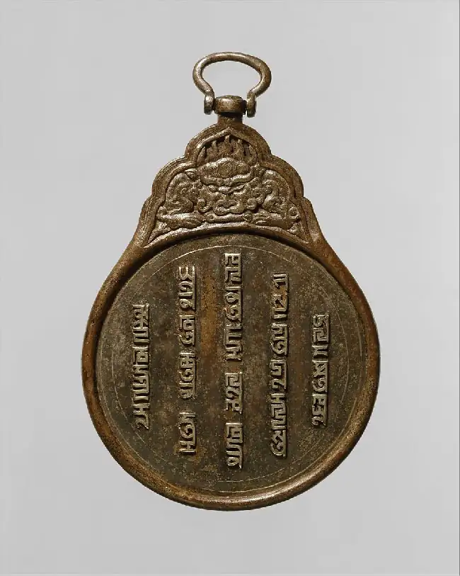
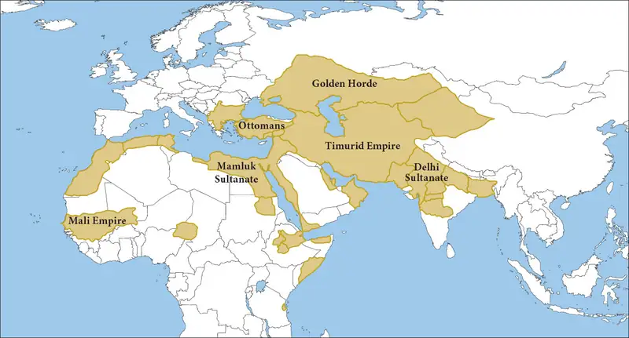

Chapter 16: Climate Change and Plague in the Fourteenth Century¶
Introduction¶
![An image of a painting is shown. The perimeter of the paining is blue, orange and white décor – x’s, triangles, and “E” shapes in various positions. The corners are brown squares with decorative “x” shapes inside. The image is set on a mustard yellow background with tufts of greenish-brown grasses seen along the bottom half. At the left back, four men with brown and blond curly hair dressed in long sleeved shirts in yellow, red, pink and faded blue carry small coffins in varying shades of brown and white toward the right – three carry them on their back and one holds it in front of his chest. One wears a pointy cap and two have beards. Two other coffins are seen in the air behind them. In the left forefront, four people are walking two by two, carrying a coffin between them. They wear blue, yellow and red long shirts, pink, blue, and yellow stockings and black shoes. The two seen in the front carry a short, thin object in their hands. The two in front have cloths over their heads while the two in back have short blond and black hair and look down. In the middle forefront of the image, a person wearing a blue long sleeved shirt and orange cloth over their shoulders stands inside a hole in the ground holding a small off white shovel with a brown handle. They have a blue hat on their head and a pained expression on their face. Behind them two people stand holding a long thin object wrapped in white cloth between them. The person on the left wears a large white hooded cape over their head and looks down while the person on the right has wavy red hair, looks down and wears a beige cape over their shoulders. In the right back of the image, two people are seen digging a hole in the ground with a shovel and pickaxe. The person on the left has one leg in the hole and the other on the ground and wears a pink hooded short cape and blue clothing. The one on the right wears an orange long shirt with an off white short cape over his shoulders. He has red curly hair and a beard. In the right bottom forefront, two people are seen lowering a coffin into a hole in the ground. The person on the left wears a long pink shirt with an orange hooded short cape on their shoulders and looks down sadly. The person on the right wears a short light orange shirt over red stockings and black shoes with a short black hooded cape over their head and shoulders. He appears to be smiling. Black, brown, and white rectangle objects are strewn on the ground in various places in the image.](img/osx-worldhist-a16-00-scimethods.webp)
Climate change, global pandemics, and political upheaval may seem more characteristic of the modern era than of the premodern world, but the first decades of the 1300s did in fact witness a rapid succession of such crises, prompting historian Barbara Tuchman to dub the period “the calamitous fourteenth century” in her book A Distant Mirror. From the ravages of the so-called Little Ice Age to the bubonic plague (Figure 16.1) and the rapid decline of the once-mighty Mongol Empire, the 1300s were marked by an array of extraordinary challenges that not only radically altered the world’s demographic and political landscape but also showcased the strength and vigor of human resilience.
Although any one of these catastrophes might have crushed the societies upon which they descended, in each case, people adapted, rebounded, and rebuilt. Due to their remarkable grit, the fourteenth century offers an unprecedented opportunity for historians to understand critical facets of the human experience, such as the impact of environmental change, infectious disease, and the ravages of military conflict.
![A timeline with events from this chapter is shown. 1250 CE: Mamluk Empire begins; an image of a tall, ornately decorated golden tower atop a gray elephant is seen with a rider on the head. 1271-1368 CE: Mongol Yuan dynasty rules China. 1279 CE: Kublai Khan defeats Song dynasty; an image of a large man with a round face, small eyes in a black and white hat, white robe, and long, black hair and beard is shown. 1309-1377 CE: Avignon papacy rules from France. 1315-1317 CE: The Great Famine; an image of a skeleton sitting atop a winged lion wearing a crown holding a large brown stick is shown with a person in a fire below. 1340s-1350s CE: Black Death sweeps Europe; an image of a room of sick people lying in beds with others standing over them. 1351-1368: Red Turban movement resists Mongol rule of China; 1358 CE: Jacquerie peasants revolt in France. 1368 CE: Zhu Yuanzhang founds the Ming dynasty; an image of a large man with a small head in a black cap and long off-white robes with gold decals all over is shown.](img/osx-worldhist-a16-00-timeline.webp)
16.1 Asia, North Africa, and Europe in the Early Fourteenth Century¶
Learning Objectives
By the end of this section, you will be able to:
- Analyze the impact of the Mongol conquest on China
- Describe changes that took place in Mongol rule of the Middle East in the fourteenth century
- Identify the causes of instability in Europe in the fourteenth century
The fourteenth century was a period of great instability in Asia, North Africa, and Europe. Although much of this precariousness was caused by climate change, famine, and epidemic disease, these natural phenomena might not have been so devastating if strong political and social institutions had existed to provide support for the people affected by these events. However, in China, the Middle East, North Africa, and Europe, war and conquest, conflicts among rulers, and the weakness of political and religious institutions affected the ability of kingdoms and empires to respond effectively to these challenges.
China in the Early Fourteenth Century¶
By the beginning of the fourteenth century, the Mongol realm had expanded its reach through a broad swath of Eurasia, effectively becoming the largest land-based empire in history. First uniting the Mongol tribes into a common fighting force with a goal of expanding their control beyond their homeland, the Mongols extended their conquest into China across the North China plain in 1212–1213, leaving many cities in ruin. It was not until Chinggis Khan’s grandson Kublai Khan came to power, however, that the Mongol invasion of southern China was complete (Figure 16.3).
![A map of Asia is shown. In the southwest, the Arabian Sea and the Laccadive Sea are labelled. In the south, the Bay of Bengal, the Andaman Sea, the Gulf of Thailand, and the South China Sea are labelled. In the southeast, the Sulu Sea, the Celebes Sea, and the Philippine Sea are labelled. In the northeast, the Taiwan Strait, the East China Sea, the Yellow Sea, and the Sea of Japan (East Sea) are labelled. Many rivers are also labelled throughout the map. In the north, the Ozero Baykal (Lake Baikal) is labelled. India is labelled in the southwest, Mongolia is labelled in the north, and China is labelled in the east. In northwest Asia, an area is labelled “Kipchaq Khanate,” north of the Aral Sea and the Balqash Koli (Lake Balkhash). In the west, two areas are labelled “Khwarezm” and “Western Liao Empire.” In northern China, an area is labelled “Western Xia” and in southeastern China an area is labelled “Song Empire” by the Taiwan Strait. In eastern Mongolia, an area is labelled “Jurchen Jin” west of the Sea of Japan. From a red dot in Mongolia, seven black arrows head in various directions throughout Asia. Two head west – one toward the Western Liao Empire and the other one splitting into two – one northwest to the Kipchaq Khanate and one to the Western Liao Empire and then splitting into a north and south arrow, the south heading toward Khwarezm. Three arrows head south toward China, and crisscross throughout the Song Empire, as well as one going through the Taiwan Strait. The last two arrows head east, then one heads northeast and the other through the Jurchen Jin Empire and into the island east of the Sea of Japan.](img/osx-worldhist-a16-01-m-mongconq.webp)
Having transferred his capital from Karakorum in Mongolia to what is now Beijing in 1264, Kublai Khan began his conquest of China by adopting the Chinese name Yuan for his empire in 1271. Meaning “origin,” the term Yuan cemented the Mongols’ political legitimacy in China by reinforcing their connection to the Mandate of Heaven, an ancient political philosophy that emphasized the divine source of governmental authority. After fully conquering the Song dynasty in 1279, Kublai Khan became the first ruler over all of China who was not of Chinese origin. In addition to his role as Yuan emperor, he claimed the title of “great khan,” asserting his claims to supremacy over the entire Mongol Empire, even though the Mongols had regional khans responsible for their own territories.
The Yuan dynasty not only incorporated China into the vast Mongol domain, but it also made it a nominal capital of the empire. China had long been a target of Mongol conquest. Its combination of strategic placement at the terminus of the interconnected Eurasian trade routes known as the Silk Roads, its abundant croplands, and a sophisticated bureaucracy provided a ready-made foundation for Mongol governance. The Mongols’ traditional nomadic ways had given them little experience in managing sedentary agriculture, so they began by absorbing many Chinese practices of taxation and administration into their government, which they staffed mainly with foreigners rather than with their Chinese subjects. Although some Chinese officials maintained their positions at the local level, the most lucrative and prestigious jobs were primarily held by Mongols and non-Chinese outsiders. Mongol leaders favored those of Mongolian descent, but they also exhibited tolerance for those they considered outsiders and supported the ethnic and religious diversity of Yuan China, particularly in urban areas. By developing policies favorable to trade, adopting the practice of Buddhism, and expanding the circulation of paper money, Mongol leadership fostered economic expansion and a cosmopolitan spirit that attracted many foreign traders to China (Figure 16.4).

Link to Learning
An initiative called “The Mongols in China” is presented by the Weatherhead East Asian Institute at Columbia University. It includes links to an interactive timeline of the Mongol presence in China. It also contains an introduction to the Mongol influence on Chinese society and narratives and visual depictions of life in China under Mongol rule.
Although Yuan rulers incorporated some elements of Chinese political culture into their governmental organization, such as the Confucian emphasis on filial piety and the veneration of ancestors, they also sought to maintain cultural distance from their Chinese subjects by forbidding them to adopt Mongol dress or learn the Mongol language. They enforced rigid hierarchies based on ethnicity and capitulation to their rule. Their four-tiered social structure placed Mongols at the top, followed by non-Mongol foreigners known as Semu ren. Their ethnic Chinese subjects were relegated to the bottom two categories; those who had submitted to Mongol rule earlier, the Han Chinese in the north, were ranked higher than those in the south who held out longer.
Although the social policy of the Mongols generated a great deal of resentment from their ethnic Chinese subjects, in other respects, the Yuan rulers instituted more benevolent policies. By creating granaries that provided food in times of famine, forgiving the tax burden for villages hit by natural disasters, and reducing the number of crimes that had traditionally resulted in the death penalty, for example, Mongol rulers likely alleviated the hardships faced by many of their subjects. By reducing banditry and making trade safer, particularly along the Silk Roads, they also boosted commerce and improved the lives and fortunes of merchants.
Despite Kublai Khan’s dominance in China, his attempts to hold a unified Mongol Empire together were largely in vain. The realm had already begun to unravel by the time he took the reins of power in China. Not only had a sharp divide occurred when some Mongols converted to Islam, but the empire itself had splintered into four separate sections known as khanates, each governed by a military ruler or governor known as a khan and who linked his ancestry to the sons of Chinggis. Yuan rulers also faced unrest from their Chinese subjects, particularly when a string of weak emperors after Kublai Khan’s death in 1294 resulted in a succession crisis that left Yuan leadership vulnerable to revolt.
Mongol taxation practices and the expropriation of agrarian land had proved financially ruinous for many Chinese peasants and farmers, though taxation benefited merchants and artisans. Despite modest efforts to shore up roads, bolster the postal service, and rebuild the Grand Canal, which provided a means of trade and transportation between northern and southern regions of China, Mongol attempts to bolster infrastructure did not reduce the resentment of their Chinese subjects. Aside from the implementation of some favorable economic and social policies, the notion of foreign rule was an affront to Chinese subjects, who were also offended by Mongols’ dietary and bathing practices. Many Chinese people likely felt affronted by their subjugation to a people they would have viewed as lesser for having such different cultural practices.
By the middle of the fourteenth century, aversion to Mongol rule had led to widespread local rebellions that ultimately hastened the collapse of the Yuan dynasty. Rapid inflation, the devastating impact of the bubonic plague, and intensifying Mongol factionalism all contributed as well. In 1368, the Yuan dynasty officially came to an end when rebel forces triumphed over the Mongol leaders and established the Ming dynasty in its stead.
The Middle East and North Africa in the Early Fourteenth Century¶
Although China served as the heart of the Mongol Empire, in the early fourteenth century, the Mongol presence also extended across the Middle East and central Asia. Political instability and shifting relationships with conquered peoples increasingly characterized the remaining khanates. For example, in the Il-Khanate, a division of the Mongol Empire that extended from the northern border of the Indian subcontinent to the eastern edge of Anatolia in modern Turkey, the nature of Mongol leadership had shifted from remote detachment to embedded assimilation by the early 1300s (Figure 16.5).
![A map of the world is shown, land highlighted in white and water in blue. In the northwest, the Mediterranean Sea, the Aegean Sea, the Black Sea, the Dardanelles, the Sea of Marmara, and the Bosporus are labelled. In the west, the Red Sea, the Dead Sea, the Persian Gulf (Arabian Gulf) the Gulf of Oman, and the Gulf of Aden are labelled. In the south, the Arabian Sea, the Laccadive Sea, the Indian Ocean, the Bay of Bengal, the Andaman Sea, the Gulf of Thailand, the South China Sea, the Sulu Sea, and the Celebes Sea are labelled. In the east, the Pacific Ocean, the Taiwan Strait, the East China Sea, the Yellow Sea and the Sea of Japan (East Sea) are labelled. In the northeast, the Sea of Okhotsk is labelled. The north area of the land is labelled “Russia” and the southeast is labelled “China.” An area from the Pacific Ocean in the east, north to Russia, south to the South China Sea and east to north of the Bay of Bengal is highlighted blue and labelled “Khanate of the Great Khan.” West of that is a small area highlighted dark pink and labelled “Chagatai Khanate.” Northwest of that is an area highlighted green labelled “Khanate of the Golden Horde.” South of this is an orange area that extends south to the Arabian Sea and west to the Black Sea labelled Il-Khanate.](img/osx-worldhist-a16-01-m-mongolhi.webp)
When the Mongols occupied portions of the Middle East, their regional leader, Chinggis Khan’s grandson Hulagu, used the title il-khan (lesser khan); his realm, therefore, became known as the Il-Khanate. Founded in 1256, the Il-Khanate was primarily centered in Persia, and its rulers resurrected the ancient title of “Iran” for this core of their domain, where they sought to maintain Mongol nomadic ways and generally neglected the khanate’s economic welfare. Early on, Mongol leaders largely imposed their traditions and practices as the dominant culture, little appreciating the cultural traditions of their subjects. In addition to experiencing this cultural alienation, many peasants found the first decades of Il-Khanate rule financially disastrous as they lost their livestock and farmlands to Mongol nomads. However, after Mahmud Ghazan, the seventh ruler of the Il-Khanate, converted to Islam in 1295, the il-khans became increasingly embedded within the Muslim communities they governed.
Although Ghazan’s conversion may have been based solely on religious conviction, it also enabled him to appeal to the growing numbers of Mongols and members of the Persian elite who had become Muslims. Mongols living in the Il-Khanate had already begun intermarrying with their Muslim subjects, but this practice greatly increased as they gradually became less culturally distinct from them. This transformation marked a significant shift in the cultural identity of Mongols, who now increasingly became part of the sedentary societies they conquered and eventually abandoned their roles as military conquerors.
Eventually the transition from foreign interlopers to fully integrated members of the community shifted Il-Khanate priorities. Although the northern regions of the khanate had been badly damaged in the early years of Mongol invasions, Ghazan and his successors focused on rebuilding the agricultural infrastructure in the southern portions of their territory, including the Iranian provinces of Fars and Khuzistan. They channeled resources into rehabilitating the empire’s economy and cosmopolitan urban life through the construction of schools, mosques, and bazaars. These policies not only enabled Islamic culture and scholarship to flourish, but they also further cemented the cultural bond between Mongol rulers and their subjects in Persia.
Despite the success of early attempts to rehabilitate the empire’s economy, by the middle of the fourteenth century, the Il-Khanate began to succumb to struggles for supremacy after the il-khan Abu Sa‘id died in 1335. Clashes between Mongol, Arab, Persian, and Turkic factions ultimately split the former Il-Khanate into several successor states. Although fragments of the Mongol Empire, such as the Golden Horde, persisted in name until the sixteenth century, after the overthrow of the Yuan dynasty in 1368, the Mongol Empire ceased to exist as a unified political entity.
Beyond the Book: Depictions of Royalty across Borders and Cultures
Portraiture has long served to legitimize political leaders and convey an image of their character as rulers. Each image in this selection (Figure 16.6) is associated with a ruler from a different region of the Mongol Empire in the fourteenth century: from left to right, Mahmud Ghazan of the Il-Khanate; Ayurbarwada, the fourth emperor of the Yuan dynasty in China; and Jani Beg, khan of the Golden Horde.
Although all three rulers were tied genealogically and politically to the Mongol Empire, they each adapted to the unique cultural contexts of their jurisdictions by recognizing and embracing the dominant religious and intellectual views of their subjects. This included having themselves depicted in a way that their indigenous subjects would see as befitting the power and status of their royalty. The differing character of their reigns and the distinctive relationship each developed with the traditions of their respective regions are reflected in the three images presented. Whereas Ghazan, who was born a Buddhist, converted to Islam shortly after ascending to the Il-Khanate throne, Ayurbarwada embraced the Confucian practices of his Chinese subjects. Jani Beg, by contrast, remained a Muslim, but he also granted concessions to the Christian Church toward the end of his reign when, according to tradition, his mother Taidula’s blindness was cured by a Christian bishop named Alexius. Look closely at the images, and consider the differing messages they might convey and the ways in which they reflect the unique circumstances of each region.
![Three images are shown. (a) A faded and stained image shows three rows of script across the top on a faded white background. Below, a slanted ornately decorated roof of a building is seen with red, blue, yellow, black and white designs with a small yellow bird at the both ends. Inside, white drapes tied in a knot can be seen hanging from the ceiling in front of yellow walls with red and blue diamond shaped decorations. At the left forefront, two men in white turbans, gray robes, and white and brown beards are seen standing. One holds his hands straight out in front of him while the other holds his hands in front of his chest. In the right forefront, a highly decorated tent is seen in blue, gray, yellow, white, and red with gold doors opening out. At either side of the open gold doors, a person in a long red robe stands with a belt, and cap – one black and white and one red. In the doorway of the tent, a person in a brown robe with gold trim over a green shirt wearing a gold crown walks into the tent. Multiple colored objects are seen inside the tent. (b) An image of a man is shown on a pale greenish woven background. He wears a white domed hat with an orange and yellow object at the top. The underside of the hat is red and red cloth hangs from the back of the hat past his ears. He has an oval face, small almond shaped eyes, and a brown textured moustache and beard. Black hair is seen from under his hat and in long strands behind his head. He wears an orange robe folded over to the right and a decorative black and red beaded necklace at his neck. (c) In the left forefront, a faded and worn image shows a person laying on a curved, brown bed under a red blanket with an orange pillow and white sheets. They wear a white domed cap with yellow cloth hanging down the sides and a black robe. Behind them stands a person in a dark green robe with gold trimmed sleeves and a red cap with gray cloth hanging down from the sides. To the right of the person in the bed a figure stands in a white robe decorated with black crosses and red ones in orange circles. They wear a large round hat and have a brown beard. A small brown stick is seen in their right hand being held toward the person in the bed. To the right, seven people stand in white robes, one in blue and red, watching the scene on the bed. At the foot of the bed, a short person in a white robe with gold trim at the edges holds a brown bowl with black inside toward the person with the crosses on their robes. In the background a white tent can be seen with black designs on top and brown mountains.](img/osx-worldhist-a16-01-ghaza.webp)
- How do these depictions of the rulers differ?
- Why might two of the images depict religious events? Drawing upon what you know about religion in China, explain why a Mongol ruler of that country might have chosen not to depict himself as affiliated with a particular religious tradition?
As the Il-Khanate regime began its steady decline in the fourteenth century, one of its chief rivals, the Mamluk Sultanate of Egypt, rose to a position of greater influence in the eastern Mediterranean. Founded by formerly enslaved soldiers of Turkish origin who first emerged as elite fighters in the Abbasid Caliphate, the Mamluk Sultanate eventually became the foremost center of Muslim scholarship and learning in the fourteenth century (Figure 16.7). The Mamluks’ reputation for military prowess gained them the respect of Muslims throughout North Africa and the Middle East, especially after they repelled the Mongol army at the Battle of Ain Jalut in Syria in 1260, stopping Mongol southwestern expansion. The Mamluks, under their military commander Baybars, then gained control of Egypt and Syria. In the process, they not only managed to protect their empire from subsequent Mongol attacks, but they also made significant contributions to the Islamization of Africa.
![An image of a drawing on a dirty beige background is seen in a vertical rectangle shape. At the bottom, a gray elephant with a long tail stands with beige colored bracelets on all feet. A bell is around their neck on a red string, white tusks are seen coming out of their mouth and their trunk is curved back toward them. A small black round object sits on the animal’s head with yellow round tassels. A dark skinned bare-chested man is seated on the elephant’s neck wearing a white waist cloth and a red robe tied around his shoulders. He holds a brown stick in his left hand that rests atop the object on the elephant’s head and in his right hand he holds an axe in the air. On the elephant’s back a gold trimmed red decorative carpet sits with large blue and red tassels. A tall, vertical rectangular gold, green, and red ornately decorated tower sits on the carpet. From the bottom, a faded person in a blue cloth on their head and white and green robes sits on a gold chair holding a stick in their hands. Above the person, two large, dark pink snake-like serpents with black curly horns are wound around each other and two blue clock hands with yellow and red claw like objects at the end. One serpent hangs its open mouthed head down toward a gold pot that sits behind the person riding the elephant’s neck below. Its tongue and teeth are bared. The other serpent winds up the tower toward a person at the front top of the tower. The person wears a blue striped turban and red gold trimmed shirt holding a yellow box in front of him. Below him, the blue head of a scaly animal sits with a yellow curved beak. Atop the tower, a white dome shows with a brown round object sitting on top and a bird on top of that. The bird is multi colored and looking to the left. A brown slat protrudes from the left of the dome and rests on the head of the man with the blue striped turban. Various Roman numerals and symbols are drawn throughout the image and pale and faded script can be seen in multiple rows behind the image.](img/osx-worldhist-a16-01-mamluk.webp)
During the period between 1260 and 1341, Cairo, the capital of the Mamluk Sultanate, became a prominent center of Muslim intellectual culture and architecture, drawing many merchants and scholars fleeing Mongol attacks in their Persian and Iraqi homelands. The age of Mamluk prosperity and prominence eventually came to an end with the death of Sultan al-Nasir Muhammad in 1341, which initiated a period of instability worsened by the onslaught of the bubonic plague in the late 1340s. While the Mamluks remained in power until their defeat by the Ottomans in the sixteenth century, a period of marked decline had begun.
Europe in the Early Fourteenth Century¶
While its eastern and southern neighbors struggled to overcome the challenges of the early fourteenth century, Europe was also undergoing widespread crises of authority and shifting axes of power in the face of famine, war, and eventually pestilence. At the beginning of the century, a period of worsening weather resulted in crop failures and food shortages that left Europe vulnerable to the ravages of the bubonic plague, a deadly bacterial disease. These crises resulted in demographic changes and economic troubles that signaled profound transformations in the religious and political foundations of medieval society. Not all regions of Europe experienced the same level of upheaval and economic decline—some areas such as the Italian Peninsula and the French city of Bourges continued to prosper—but the fourteenth century was generally an era of chronic conflict and instability for most of the continent (Figure 16.8).
![A map is shown with water in blue and the land in multiple colors. From the north to the south, these locations are labelled with their colors: Norwegian Iceland (purple), Lapps and Finns (Gray), Norway (purple), Sweden (pink), Scotland (pink), Ireland (lime green), England and Wales (orange), Denmark (lime green), Teutonic Order (green), Lithuania (lime green), Russian principalities (Rus) (blue and gray stripes), Mazovia (light blue), France (light blue), Bohemia (yellow), Poland (dark blue), Gallicia-Volhyia (green), Khanate of the Golden Horde (gray), Holy Roman Empire (several small states) (gray), Habsburg (orange), Gascony (orange), Hungary (light blue), Moldavia (lime green), Theodoro (Gothia) (pink), Genoese provinces (lime green), Portugal (pink), Castille (lime green), Granada (light blue), Navarre (purple), Aragon (yellow), Majorca (green), Genoa (green), Sardinia (gray, green, lime green, and orange), Papal states (pink), Venice (lime green), Naples (light blue), Sicily (green), Bosnia (dark blue), Ragusa (yellow), Cataro (yellow), Rascia (Serbia) (green), Vidin and Bulgaria (gray), Wallachia (green), Trnovo (orange), Empire of Trebizond (green), Georgia (pink), Byzantine Empire (pink), Achaia (lime green), Athens (light blue), Small Turkic Beylikates (gray), Ilkhan Empire (orange), Cillician Armenia (pink), Venetian Crete (lime green), Knights of St. John (lime green), Cyprus (light blue), Maghreb Marinida (green), Tlemcen Zayyanida (dark green), Bejaia Hafsids (light blue), Tunis (dark green), Banu Sulaym (pink), Berber (Amazigh) tribes and Lybian tribes (gray), Egypt and Mameluke Empire (dark orange), and Bedouin tribes (gray).](img/osx-worldhist-a16-01-m-europe.webp)
In contrast to the stability that had defined much of the thirteenth century for the European Christian Church, it began experiencing significant destabilization in the beginning of the fourteenth century, when tensions between the pope and national monarchs led to a weakening of papal authority and division within the church. A notable conflict occurred between Pope Boniface VIII and King Philip IV of France, after Philip sought to impose taxes on the clergy in his country without papal approval. As a result, Boniface issued an edict reinforcing papal supremacy over secular rulers, to which Philip responded by attempting to kidnap the pope in 1303. Although the papacy retained its political autonomy and independent bureaucratic structures after a series of pontiffs came to settle in Avignon, France, the time they spent there tarnished the pope’s spiritual prestige and led many to question the integrity of the church’s administrative structures.
Although Pope Gregory XI brought the papal court back to Rome in 1377, continuing disagreements between church factions about papal legitimacy led to the simultaneous appointment of three popes and inaugurated a period known as the Great Western Schism (1378–1417). Although this crisis of authority was eventually resolved when the Council of Constance (1414–1418) persuaded two of the popes to resign, by then the reputation of the papacy had deteriorated significantly.
The decline in respect for the Roman Catholic clergy can be seen in an English satirical poem known as The Land of Cockaigne. The poem calls attention to the church’s purported gluttony during a time marked by food insecurity by depicting a monastery made of mouthwatering pastries and breads. The image of a church made of food suggested the greed of the clergy: “There is a fair abbey for monks, white and grey, and its chambers and halls have walls made of pies filled with fish and rich meats, the most delicious man can eat. The shingles on the church, cloisters, bowers and hall are wheat cakes, and the pinnacles are fat puddings, rich enough for princes and kings. All may be rightfully eaten without blame, for it is shared in common by young and old, strong and stern, meek and bold.”
In the midst of the church’s crisis of authority and status, many areas of Europe were further racked by political and military conflict through much of the fourteenth century. The Hundred Years’ War (1337–1453) erupted between England and France over claims to French lands held by the English monarch. The tension was heightened in 1328 when King Charles IV of France died without a son. The crown was given to his nephew Philip, the Count of Valois, the son of Charles’s younger brother. However, King Edward III of England, the son of Charles’s sister and the older of the two claimants, maintained that he had the greater right to the throne of France. The conflict caused widespread political factionalism and devastation, particularly in France where most of the fighting occurred.
Although the war lasted 116 years, its periods of conflict alternated with times of truce. The new military technologies of the late medieval period shaped much of the conflict and rendered combat especially savage. While the English longbow, prized for its ability to send arrows farther and faster than the French crossbow, dominated the first decades, later in the war the use of firearms and gunpowder became more widespread and more destructive, thanks to the ability of these weapons to dismantle the protective walls of castles and cities. Despite England’s dominance early in the conflict, the war’s conclusion in 1453 ultimately left France in control as the dominant kingdom of western Europe.
Link to Learning
The British Library learning timeline provides an interactive chronology including brief descriptions, sources, and images of key events in fourteenth-century European history, such as the Hundred Years’ War.
Another center of political instability during this period was the Holy Roman Empire. In the fourteenth century, the Holy Roman Empire, which had been founded by Charlemagne in 800, comprised four main entities—the Kingdom of Italy, the Kingdom of Germany (including lands that now are part of Belgium, the Netherlands, Germany, Austria, and Switzerland), the Kingdom of Burgundy (a region in southeastern France), and the Kingdom of Bohemia (what is now the Czech Republic and part of Poland) under the nominal control of an elected emperor. Each of these kingdoms, in turn, was composed of a loose coalition of independent territories with different hereditary rulers. The emperor was chosen by a handful of these rulers known as electors.
Competition between noble families vying for the role of emperor often created instability. In 1314, for example, one group of electors chose the ruler of Austria to be emperor, but another group gave the title to the ruler of Bavaria. Later in the century, the Golden Bull, proclaimed by the emperor Charles IV in 1356 (bull is the Latin word for “seal”), attempted to simplify and clarify the process by which the emperor was elected. The document asserted that emperors would be selected by seven specific prince-electors, the secular rulers of four principalities and the archbishops of three cities within the empire. This practice of electing emperors stood in stark contrast to the hereditary monarchies of other European kingdoms such as France and England.
Rather than adopting a common currency, legal system, or representative assembly, the Holy Roman Empire remained a patchwork of semiautonomous principalities. Although each of these became relatively stable, the empire itself was a weak and decentralized political entity. By the end of the fourteenth century, it included more than one hundred principalities, each with varying degrees of power and autonomy. The emperor was now beholden to both the rulers who elected him and the pope, who in theory bestowed the imperial crown.
16.2 Famine, Climate Change, and Migration¶
Learning Objectives
By the end of this section, you will be able to:
- Explain how climate change affected Afro-Eurasian societies in the fourteenth century
- Discuss the reasons medieval people migrated and how they did so
Rising sea levels, extreme hurricanes, and seismic disruptions may call to mind apocalyptic scenes from sci-fi movies, but global climate change, adverse weather, and natural disasters all played a real and significant role in shaping the course of human history in the fourteenth century. Environmental conditions have consistently had a profound impact on the availability of resources and the development of human settlements, trade, and migration across the globe.
Cross-disciplinary collaboration between historians and paleo-scientists has yielded vital information about environmental change in the premodern world. Even subtle shifts in climate and temperature have historically resulted in widespread demographic and ecological transformations that now shed light on the ways in which forces of nature and human activity intersected in the past. Understanding these connections enables us as modern historians to track the short- and long-term causes and consequences of historical plagues, famines, and environmental events, such as those that defined much of the fourteenth century. Learning about the ways in which past societies adapted to environmental challenges also provides vital context for modern debates about the effects of climate change and ways in which the environment affects the continued settlement and development of peoples around the world.
The Effects of Climate Change in the Fourteenth Century¶
Perhaps the greatest challenge in grasping the impact of climate change on the past is the limitations of traditional historical sources. Texts and other written source materials often provide scant information about environmental fluctuations of earlier centuries. To overcome these barriers, the field of historical climatology focuses on reconstructing and analyzing climates of the past and comparing them with modern conditions, allowing scholars to expand the traditional source base of historical research. Historians study references to crop yields and weather fluctuations in weather journals and tax records, along with scientific data drawn from tree rings and organic material trapped beneath ice sheets in different parts of the world, which offer information about past temperature fluctuations and rainfall patterns (Figure 16.9).
![A drawing of a tree sliced horizontally to reveal the rings inside, each with a very dark brown line in between, is shown. Two dark brown rings are seen in the middle with the innermost one labelled “First-year growth.” The next five rings are a slightly lighter shade of brown, A thick darker brown ring follows with two light brown rings next. Then seven beige rings follow, the second one labelled “Rainy season” and the fourth one labelled “Dry season.” A black area between the second and third ring in this section is labelled “Scar from forest fire.” A light brown ring follows at the end. A thick, dark brown ring on the perimeter of the circle has black serrated bumps on the outside. A small section toward the edges of the rings is circled and enlarged at the left. One label points to the light brown ring and is labelled “Spring/early summer growth” and a label points to the dark line between the rings and is labelled “Late summer/fall growth.”](img/osx-worldhist-a16-02-treerings.webp)
The investigation of such historical clues hidden in the natural world has enabled scholars to identify the ways in which environmental conditions and patterns of human migration and settlement have together shaped the course of human history. In the case of the calamitous fourteenth century, a series of unusual climatic changes led to a chain reaction of competition for resources and desperate attempts to mitigate the damage and despair that defined the century’s first decades.
At the beginning of the fourteenth century, subtle shifts in global mean temperature and rainfall had a profound impact on the climate of the Northern Hemisphere, unleashing devastating famines and plagues across Afro-Eurasia. These events caused significant human hardship, disrupted commerce, and contributed to the decline of once-great empires, even the seemingly impenetrable Mongol dynasty. Although premodern people did not understand these extraordinary environmental shifts, their lives were no less affected by them. In an era during which many people survived on subsistence agriculture, even the slightest change in seasonal weather patterns could devastate crops and result in widespread malnourishment and starvation. Poor nutrition weakens human immune systems, which—together with poor sanitation and the close quarters in which people lived in medieval towns—undoubtedly left many more vulnerable to the ravages of epidemic diseases. This was especially the case when the bubonic plague struck much of Afro-Eurasia by the middle of the century.
To place the dramatic meteorological changes of the fourteenth century in context, we must understand how they relate to larger climate patterns. Long-term weather fluctuations, during which periods of relative warmth and cold alternated over hundreds of years, have long been part of Earth’s ecological landscape and the narrative of environmental history. Within these longer periods of gradual climatological change, however, less predictable short-term fluctuations have also resulted from rapid changes in wind patterns, ocean currents, and seismic activity. From time to time, such erratic climatological shifts resulted in devastating reversals of typical weather patterns.
In the fourteenth century in particular, the Little Ice Age, a period of unusually cold weather that affected most of the Northern Hemisphere (Figure 16.10), led to significant variations in normal rainfall and a general drop in the mean annual temperature. Preceded by a Medieval Warm Period, a span of more temperate climate across the globe from the tenth through the thirteenth century, the cool temperatures and, in some areas, droughts radically reduced available resources and food supplies. Aggravated by rising population levels and declining agricultural productivity, food shortages caused significant hardship and financial distress as famine became commonplace and competition for resources intensified.
![A chart is shown with tick marks along the x axis and the y axis labelled “Change in temperature (⁰C)” with three horizontal lines drawn to the right of the label. These numbers are listed across the x axis: 1000, 1200, 1400, 1600, 1800, and 2000. Other tick marks in increments of 50 are drawn but not labelled. A label with “Medieval warm period” is highlighted from 900 to 1300 and a “Little Ice Age” is indicated from 1300 to 1850. A black dashed line runs through the middle of the chart in a horizontal line and a red line runs up and down in the chart. It rises above the dashed line during the Medieval warm period and dips below the dashed line during the Little Ice Age. It rises back above the dashed line after 1900.](img/osx-worldhist-a16-02-iceage2.webp)
Link to Learning
An overview of the field of historical climatology is provided in “Little Ice Age Lessons: Towards a New Climate History.” This overview includes a section about the ways in which the fourteenth-century Little Ice Age offers lessons about past, present, and future relationships between climate change and human affairs.
If you have a scientific background and would like to explore the subject in greater depth, a compilation of scientific information about the causes and impact of the Medieval Warm Period is provided by this ScienceDirect web resource. Charts and graphs are included that demonstrate the temperature and meteorological fluctuations of this period.
Although a consensus about the causes of the Little Ice Age remains elusive, possible triggers may have included changes in ocean circulation patterns, shifts in the earth’s orbit, and several massive volcanic eruptions in the tropics that released clouds of sulfate particles into the atmosphere and reflected solar energy back into space at the end of the thirteenth century. Ultimately, these environmental changes resulted in an advance of mountain glaciers and an overall mean global temperature decrease of 0.6°C (with some areas experiencing as much as a two-degree drop in annual temperature). This decrease may seem insignificant, but in the absence of modern agricultural and irrigation techniques, it led to catastrophic crop failures and widespread famine in many parts of the Northern Hemisphere within the first few decades of the fourteenth century. The increase in glacier growth, moreover, affected many regions of the world, because the more water turned to ice, the less was available to evaporate and turn into rain. As a result, even areas far from glacial mountains suffered prolonged periods of drought.
Despite their global impact, the effects of the Little Ice Age were not the same everywhere. In the Mediterranean and West Africa, irregular rainfall and periods of drought dramatically reduced crop yields, whereas in China and northern Europe, cold weather and the freezing of lakes and rivers were especially pronounced. Elsewhere in Europe and Asia, in 1314, extraordinary rains began to fall that introduced a period of abnormally cold and wet winters. This deluge of precipitation resulted in poor harvests as people struggled to cultivate already overworked land. Outside Afro-Eurasia, evidence suggests that the North American interior also suffered when established agricultural systems faltered under hotter summers with less rain and colder winters, leading to severe population loss in the southwestern region.
Although the Little Ice Age was especially devastating in the 1300s, its effects persisted for many centuries. In addition to its immediate impact on crops, late medieval climate change led to longer-term deforestation because more wood was used for heating, in the Northern Hemisphere in particular. The climate shift not only altered building designs and clothing styles, which became adapted to colder temperatures, but in some places it also ultimately precipitated the eventual adoption of coal for heating and the beginning of human reliance on fossil fuels.
Link to Learning
“The Little Ice Age: Weird Weather, Witchcraft, Famine and Fashion” is a podcast discussing the historical climatology of the Little Ice Age and its connection with some of history’s most critical events, such as the Black Death and the French Revolution.
The period known as the Great Famine of 1315–1317 was a direct result of the Little Ice Age in much of Europe north of the Alps, an area of roughly 400,000 square miles. This widespread and prolonged food shortage prompted one of the worst population collapses in Europe’s recorded history. It is virtually impossible to know the actual death toll, but it is likely that up to 10 percent of northern Europe’s population of more than thirty million perished. Even though crop yields began to rebound in 1317, it took several more years for them to return to prefamine levels. Beyond the devastating loss of lives and human suffering, prolonged food shortages also led to widespread political and economic instability. The prices of necessary food staples like grain skyrocketed, and competition for resources generated social tension, conflict, and an increase in crime. Ultimately, the Great Famine led many to question the ability of church officials and monarchs to respond effectively to crises and catastrophes, which had long-term effects on public trust in these institutions (Figure 16.11).
![A drawing in a vertical rectangle is shown on a pale yellow faded and stained background. At the top of the image, a person with skeletal features is sitting atop a winged lion like animal. The skeletal figure has deep hallowed eyes, teeth in a straight row, and ribs showing at the torso. They hold a large brown sword in their right hand and the tail of a faded blue flying serpent in their left. The serpent has short yellow wings, long red tongue and large claws. The lion has large feathered pale pink and yellow wings, a long wavy mane extending from their chin, a red tongue sticking out, and wears a gold crown. The lion’s tail curls to the bottom of the image and connects with a blue, black and white two legged beast with fire emanating from its large wide open mouth and snout nostril. Sharp teeth are seen in the mouth and a white beard hangs from its chin. A person stands on the corner of the creature’s mouth. He is colored brown and has dark brown projections coming out the back of his head. His right hands is bent at the elbow and his left hand points to his mouth. A word is written next to his mouth.](img/osx-worldhist-a16-02-grfamine.webp)
In Their Own Words: Johannes de Trokelowe
In 1315, Johannes de Trokelowe, an English monk and chronicler in the reign of King Edward II, wrote the following account of the impact of the Great Famine. Note how daily life was affected by rapidly rising prices and scarcity of food in the wake of devastating rains over northern Europe during the Little Ice Age.
“In the year of our Lord 1315, apart from the other hardships with which England was afflicted, hunger grew in the land. . . . Meat and eggs began to run out, capons and fowl could hardly be found, animals died of pest, swine could not be fed because of the excessive price of fodder. A quarter of wheat or beans or peas sold for twenty shillings [in 1313 a quarter of wheat sold for five shillings], barley for a mark, oats for ten shillings. A quarter of salt was commonly sold for thirty-five shillings, which in former times was quite unheard of. The land was so oppressed with want that when the king came to St. Albans on the feast of St. Laurence [August 10] it was hardly possible to find bread on sale to supply his immediate household. . . . The dearth began in the month of May and lasted until the feast of the nativity of the Virgin [September 8]. The summer rains were so heavy that grain could not ripen. It could hardly be gathered and used to bake bread down to the said feast day unless it was first put in vessels to dry. Around the end of autumn the dearth was mitigated in part, but toward Christmas it became as bad as before. Bread did not have its usual nourishing power and strength because the grain was not nourished by the warmth of summer sunshine. Hence those who ate it, even in large quantities, were hungry again after a little while. There can be no doubt that the poor wasted away when even the rich were constantly hungry. . . . Four pennies worth of coarse bread was not enough to feed a common man for one day. The usual kinds of meat, suitable for eating, were too scarce; horse meat was precious; plump dogs were stolen. And, according to many reports, men and women in many places secretly ate their own children. . . . —Johannes de Trokelowe, Annales, 1315”
- How does Trokelowe describe the change in food prices, and to what does he attribute the poor harvests of 1315?
- Salt was an important staple for food preservation. How might a significant rise in the price of salt affect everyday life?
- How did people attempt to cope with food shortages? Why do you suppose Trokelowe came to believe that some even resorted to eating their own children?
With very few options to remedy the devastation wrought by years of poor weather and famine, most people had little practical recourse other than migrating in search of better conditions. The collective anxiety and social tension of the era sometimes led to scapegoating, including persecutions of supposed witches based on the premise that they had the ability to control the weather as a means of causing others harm. Historians have traced connections between peaks of the Little Ice Age and spikes in witch-hunting activities. Although this type of persecution was by no means universal, it demonstrates the desperation many people must have felt in the face of unrelenting strife.
Mobility and Human Society¶
Throughout history, economic opportunity and access to new and varied resources have inspired merchants and traders to travel. In the premodern world, this was especially the case along the trade routes of North Africa and the Silk Roads, an active network of trade and commerce that attracted merchants and traders from across Afro-Eurasia (Figure 16.12).
![An image of a drawing is shown on a brown spotted off-white background. Green and red lines crisscross the image. At the top right, a thick wavy blue line is drawn in a curve and above it are two yellow flags, one with a red square in the middle and triangle end with fringes. An upside down circular white castle is in the corner with three towers at the top and a red roof. In the middle top of the image, another white upside down castle shows with a very tall pole with a yellow flag atop. Script in black is written to the right in two rows. In the middle of the image, a rocky brown, black and beige path is drawn across the image tilted up at the left. At the front of the path, eight dark blue horses are shown with red reins walking to the left. One has a red covering on its back with a white sack hanging off the side. A few in the back have white square items at their sides. Behind the horses, a tight group of six people walk in pointed green, red, and light blue caps and matching colored robes and black shoes. Behind them at the right eleven figures ride blue and black scalloped horses toward the left. They wear bright red, blue, and green clothing as well and caps. In the lower third of the image, eight white and red castles are drawn, with one sideways. Four have black flags flying on the long poles. Red script is written by all the castles on the map and in this lower portion, black script is written vertically below the rocky path above. A backward “B” shaped blue and white area is shown in the bottom middle of the image.](img/osx-worldhist-a16-02-silkroad.webp)
Travel was also a common requirement of religious devotion in the tradition of pilgrimage. Muslims desired and were even obligated, by one of the “pillars” of Islam, to complete the hajj, a visit to Mecca and Medina, the holy sites of their faith in modern Saudi Arabia. Many Christian faithful wanted to travel to sacred sites containing relics of the saints, believed to be imbued with special power, and also to the Holy City of Jerusalem, believed to be the site of Jesus’s crucifixion and resurrection. The surrounding area was the birthplace of the Christian Church. Jerusalem was also the site of the holiest of holies of Judaism, the most sacred of spaces where the Temple of Solomon had stood until its destruction by the Romans.
Beyond the demands of trade and religion, however, travel was far less possible for all but a small elite who could afford the time and expense required. Travel narratives and journals written by the select few who could embark on voyages provide much of our knowledge of premodern travel. In particular, the chronicles of Ibn Battuta, a Moroccan scholar who traveled across much of the Muslim world of Asia and Africa in the fourteenth century, offer much insight into the conditions and challenges travelers faced.
Link to Learning
This interactive web resource from the University of California, Berkeley provides a virtual tour of Ibn Battuta’s travels in the fourteenth century. It also describes their historical context and offers suggested readings and links to related videos and primary sources.
At the same time, worsening environmental conditions necessitated travel by many who would rarely have ventured beyond their immediate surroundings but now migrated in search of the resources they needed to survive. Leaving behind all that was familiar in the hope of finding a more stable and hospitable environment, they faced a variety of perils, including regional disputes, adverse weather conditions, illness, and banditry. It was difficult to arrange travel between the many different political entities that existed in the fourteenth century, and crossing borders could be exceptionally risky without the security provided by the presence of established networks or patrons, especially when it came to bandits and lack of access to safe waystations to rest. Moreover, at a time when people were struggling to secure basic necessities, travel was very expensive. Horses, carts, camels, and seafaring vessels were beyond the means of most people, so walking became the most common means of transportation for those in search of new opportunities and resources. Walking eight to ten hours a day, on poor roads and at times in poor weather conditions, likely made the experience all the more grueling for migrants who were already malnourished, weak, and vulnerable to opportunistic infections.
Although some people traveled back and forth across borders, the difficulties and expense of fourteenth-century travel made round trips uncommon. Many were forced to abandon their homes knowing they would likely never return. In times of drought and food shortages, these climate refugees faced precarious situations and uncertain prospects. They could become “strangers in strange lands,” foreigners whose unique customs and cultural practices—including religious traditions, dress, and language—marked them as “other” and worthy of scorn.
For those participating in commerce and bringing luxury goods over long distances for sale in faraway markets, however, the experience of travel could be very different. Though merchants and traders too were often seen as “other,” the goods they carried and their need for logistic support along the way, like food and caravansaries (inns along the common trade routes), directly enriched local societies and gave these travelers a different status.
Whether they were pilgrims, refugees, merchants, or soldiers traveling great distances in the premodern world, people on the move brought with them both the goods and traditions of their homelands. In the fourteenth century, an increase in this long-distance travel by a greater swath of people across Afro-Eurasia helped bring new technologies and traditions over geographic and cultural divides, but the desperation of some travelers meant the process was not without tensions. Beyond this, however, a growing threat in the form of infectious disease traveled with them, too, and it soon had a disastrous impact on society even beyond the droughts and famine that had caused many to abandon their homes.
16.3 The Black Death from East to West¶
Learning Objectives
By the end of this section, you will be able to:
- Identify the origins and characteristics of the bubonic plague
- Describe the response to the Black Death in Asia and North Africa
- Describe the response to the Black Death in Europe
Imagine a world in which medicine was utterly defenseless against a disease that could kill within hours. Vaccines and antibiotics had not yet been discovered, nor was the existence of germs and their role in contagion understood. While treatments existed, their efficacy was limited, and medical knowledge was unequally understood across regions and within class structures. At times, the defenses against illness were prayers, divination, the protective aromas of flowers and spices, and for the select few who could afford to flee heavily populated areas, retreat to the countryside. Such was the world of the Mediterranean basin and Afro-Eurasia in the middle of the fourteenth century when the bubonic plague ravaged central Asia, the Middle East, North Africa, and Europe.
After the plague had run its course by the 1350s, it recurred in cyclical fashion several times during the second half of the fourteenth century. It was never fully eradicated, though subsequent waves were not as deadly as the initial outbreak, with the exception of the Great Plague of London in the 1660s and an especially virulent outbreak that began in China in 1894. Outbreaks have occurred more recently in parts of Asia, Africa, and Latin America, but surveillance, preventive measures, early diagnosis, and treatment with antibiotics remain the most effective approaches to preventing its spread.
The Origins and Spread of the Bubonic Plague¶
The bubonic plague, the most common variant of the disease caused by the bacterium Yersinia pestis, raises egg-shaped swellings known as buboes near an afflicted person’s lymph nodes in the groin, underarm, and upper neck areas. Other symptoms include fever, nausea, vomiting, aching joints, and general malaise. For the vast majority in the Middle Ages, death generally occurred within three days. The bubonic plague pandemic, which had far-reaching economic, political, social, and cultural effects throughout Afro-Eurasia, came to be known as the Black Death. This name, inspired by the blackened tissue the disease caused on the body, also came to express the fear and awe brought by a disease with a mortality rate ranging from 30 to 80 percent. That is significantly higher than the deadliest smallpox, influenza, and polio pandemics of the modern era. Although in its bubonic form the plague could not be spread from human to human, the rat flea became a major plague vector, an organism that spreads plague from one organism to another.
The black rat was one of the most capable animal hosts for the plague-carrying fleas. It was highly susceptible to the disease itself and an especially inconspicuous stowaway on trade caravans and merchant ships. Cases of bubonic plague proliferated as rats spread through the international shipping and trades routes of the Silk Roads and the Mediterranean Sea, where they colonized crowded dwellings in towns and cities. The spread of the plague only increased owing to the increased movement of people. First it was the Mongol armies, traveling over enormous distances and unintentionally bringing small mammalian stowaways among their foodstuffs. Then, owing to the Mongols’ protection of merchants and others traveling great distances during the Pax Mongolica, the disease spread further and in new directions. Finally, those forced to leave their homes for survival amid famine and environmental change created yet another pathway for the disease to spread.
Plague-bearing fleas generally preferred to feed on small rodents such as rats and marmots, but when their rodent hosts succumbed to the plague, they secured their next meal from the nearest human. Two even deadlier variants of the disease eventually emerged during the fourteenth century: pneumonic and septicemic. The pneumonic form directly infected the lungs and was spread from person to person by coughing, with a mortality rate of 95 to 100 percent. The septicemic variant, which resulted from plague bacteria circulating directly into the bloodstream, was invariably fatal and, according to contemporary observers, seemed to kill within hours of the first onset of symptoms. While historians had surmised for many decades that the plague had spread in primarily one form (bubonic) and in one direction (east to west), new evidence increasingly suggests there was a far greater diversity of spread.
Although in many regions where it struck the plague was eventually understood to be contagious, at first the means of transmission were not recognized. Some saw the epidemic as a divine punishment from God, and others speculated that it was caused by a rare conjunction of planets creating noxious atmospheric conditions on Earth. Others blamed foreign travelers, minority religious communities, or vagrants. The desperation incited by the plague’s relentless assault often led to scapegoating of marginalized populations, particularly in Europe.
Dueling Voices: The Origins of the Black Death
In the following excerpts are two different historical interpretations of the origins of the Black Death. In the first, medievalist Philip Ziegler discusses the central Asian origins of the fourteenth-century bubonic plague pandemic, arguing that abnormally high death rates near Lake Issyk-Kul point to the pandemic’s beginnings. In the second selection, new research by medical historian Monica H. Green strongly suggests the disease first developed in the thirteenth century and was largely misunderstood amid the chaos of the Mongol conquests. Green argues that the plague outbreak of the mid-fourteenth century was actually one of four “explosive proliferations of Yersinia pestis into new environments” and that its origins go beyond a simplistic narrative of rats moving westward. As you read, consider what factors might have led each historian to take a particular point of view.
“Though it is impossible to be categorical about the origins of the medieval pandemic, investigations near Issyk-Kul, a lake in Central Asia, show that there was an abnormally high death rate in 1338 and 1339. Memorial stones attribute the deaths to plague. Since this area is in the heart of one of the zones in which bubonic plague lies endemic, it is likely that this was the cradle of the Black Death. From there it spread eastward into China, south to India, and west to the Crimea some eight years later. —Philip Ziegler, The Black Death”“The combined approaches of evolutionary genetics—working from modern isolates of Yersinia pestis and the retrieved genetic fragments of the bacterium reclaimed from its premodern victims—have given new parameters to the history of plague. Currently, the biological archive, which has now yielded over three dozen complete Yersinia pestis genomes in evidence of Europe’s late medieval and early modern experience of plague . . . supports the idea that one specific strain of Yersinia pestis . . . entered the Black Sea and the Mediterranean, and from there into Europe, in 1347–1348. . . . The climate crises and grain shortages of the early fourteenth century may well explain the intensity of that outbreak. . . . But the (west Eurasian) Black Death, as traditionally defined, was preceded by the terrors experienced at the sieges in Song China and western Asia [by the Mongols] in the thirteenth century. . . . The historian, working with documentary sources, will need to track the humans who are now implicated in plague’s spread. In so doing, historians would do well to adopt epidemiologists’ neutral stance toward the task of tracking infectious disease: this is not about assigning ‘blame.’ It is about documenting humans doing what humans do. —Monica H. Green, “The Four Black Deaths””
- How do Ziegler and Green’s arguments about the origins of the plague differ?
- Upon what sources is Green relying for her innovative conclusions?
Many historians have focused almost exclusively on the Black Death’s impact on Europe, assuming that other regions were only minimally affected. The Americas and Australia were, indeed, entirely spared due to their geographic isolation. Other areas such as the Indian subcontinent experienced relatively mild outbreaks. However, we now know that the disease’s spread affected much of Asia, the Middle East, Europe, North Africa, and possibly some regions of sub-Saharan Africa in what are now Ghana, Nigeria, Burkina Faso, and Ethiopia. And new scientific techniques such as genetic testing are strongly suggesting that the plague developed far earlier than modern historians had believed. In its most well-documented form, it ultimately spread along international sea and land trade routes in the 1340s and by 1409 had reached port cities of the Indian Ocean trade network in East Africa (Figure 16.13). Wherever it went, the Black Death left a trail of demographic destruction and long-term damage to social and economic networks, compounded by the combined effects of drastic climate changes, rebellions, and crop failures that preceded it in many parts of Afro-Eurasia in the early 1300s.
![A map is shown. Water is highlighted in white and land is shown in gray. The Atlantic Ocean is located in the southwest, the Indian Ocean in the south, and the Pacific Ocean in the east. Europe is labelled in the west, North Africa in the southwest, Asia in the north, and the Middle East is labelled in the middle. Red dashed lines indicating “Trade routes” crisscross Europe, southern Asia and the Middle East from the Pacific Ocean to the western coast of Europe. In Africa they hug the east and northeast coasts. Black arrows are shown indicating “Spread of bubonic plague (Black Death).” Two arrows begin in eastern Asia and one heads northwest while the other one heads west, splitting into two – one heads west to Europe and the other heads toward the Middle East and splits into two, one north and one continuing west. The arrow heading to the west continues along the coast and heads south along the northeastern coast of Africa. An arrow begins northeast of the Indian Ocean in South Asia and heads northeast. Two arrows begin in eastern Europe and one heads north while the other heads southwest and then breaks off into three arrows heading west and into North Africa. One arrow begins in southern Europe and breaks into two, one heading north and the other west.](img/osx-worldhist-a16-03-m-death.webp)
The Black Death in Asia and North Africa¶
Although the exact date of the Black Death’s arrival in China remains unknown, Chinese historical records first refer to the appearance of a deadly epidemic in the years from 1331 to 1334. The accounts of the Chinese Imperial Maritime Customs Service, compiled in the late nineteenth century, suggest that roughly thirteen million people perished during this lethal outbreak. For those living in China, the devastation likely seemed to portend the withdrawal of the Mandate of Heaven from the rulers of the Yuan dynasty. Epidemics, droughts, and other catastrophes could be perceived as omens of divine displeasure and an indication that a ruler had lost divine support.
After ravaging China, the plague continued to spread west along trade routes by land and sea that eventually enabled it to engulf much of the Middle East. The Il-Khanate was heavily reliant on the trade networks of the Silk Roads and especially vulnerable to the plague’s disruption of the trade communities therein. In the midst of a protracted conflict with the Golden Horde, a rival khanate to the north, the Il-Khanate was reeling from the shock of invasion, factional disputes, and the death of the ruler Abu Sa’id Bahadur Khan (possibly from plague) in 1335. The plague’s devastating impact on trade and the population decline further compounded the deterioration of Il-Khanate Mongol rule after Abu Sa’id’s death. Cities such as Tabriz in Iran that had long served as thriving centers of trade were largely abandoned by the 1340s, when foreign merchants abruptly fled the city and commerce plummeted. To put this into perspective, imagine what would occur if today’s most renowned cosmopolitan centers of trade like New York, Tokyo, London, and Hong Kong fell suddenly into ruin as deserted ghost towns.
The decline of Tabriz was truly shocking to contemporary observers, but few cities were spared when infected fleas accompanying trade caravans were readily transported across central Asia and into the Middle East. Although the mortality rate across the Middle East was high, much of our knowledge of the plague’s impact in the Muslim world comes from historical documentation of its impact on the Mamluk Empire (1250–1517), which suffered a population loss of roughly one-third.
Under the control of the Mamluk rulers, who were based in Cairo, the trade routes of the Nile delta were hit especially hard. As in Yuan China, the onset of plague in Egypt was intensified by localized famines that disrupted agriculture and sent many rural peasants to large cities like Cairo and Alexandria in search of employment as unskilled wage laborers. Being in these densely populated zones significantly increased their chances of contracting the plague. The nomads of the region had long known to avoid settled areas when strange diseases appeared, and they largely managed to outrun the disease by retreating into the desert. Although some of Cairo’s Mamluk elite fled to rural areas north of the city in 1347, most decided to remain and protect their citadel from potential attacks from their rivals. In the process, however, they made themselves vulnerable to the plague and experienced high mortality rates.
Treatises written by Islamic scholars in the 1340s shed some light on the ways in which the Muslim world responded to the suffering. These texts, meant to serve as chronicles of the plague, also provided medical guidance and advice about proper conduct during epidemics. Doctors could neither define nor remedy the disease, so plague texts tended to frame the epidemic with religious explanations and recommendations derived from the Quran and religious law. Typically describing the plague as noncontagious, they instructed readers not to flee from it, declaring it a potential opportunity for martyrdom for faithful Muslims and a warning to infidels sent directly by God.
Other contemporary Arab writers described the plague as an apocalyptic catastrophe that resulted from a breach in the gate that separated humanity from Gog and Magog, the evil forces that, according to tradition, threatened to destroy the faithful. Even given the apocalyptic tone of this account, however, the Muslim response to the plague generally lacked the doomsday predictions and persecution of minorities that occurred in other regions such as Christian Europe. Although many undoubtedly fled the plague in spite of the treatises, Muslim writers tended to emphasize the importance of a collective and controlled response that promoted resignation and acceptance of God’s will.
Many formerly thriving industries in Mamluk cities went into deep decline during the plague, but there was a sudden increase in the construction of madrasas, mosques, and tombs, which for those who survived were a means of expressing gratitude. As a result, urban artisans who worked on these tended to be compensated very well for their skill. The only other occupational group in the Mamluk Sultanate that prospered in the wake of the plague was the spice merchants, since Egypt continued to serve as an important depot in the international spice trade. As agriculture and trade in other industries plummeted, however, the golden age of the Mamluk rulers came to an abrupt end in 1341. Although the Mamluks continued to rule until 1517, fierce clashes and ethnic rivalries within their empire created significant political instability that ultimately led to its collapse.
The Black Death in Europe¶
As the plague began wreaking havoc in the Mamluk Sultanate, it was also making its way to the ports of Europe via Silk Roads trade caravans and merchant ships sailing the Black Sea in 1346–1347. After striking the Mongol-controlled cities of Astrakhan and Sarai (in present-day Russia), when bales of flea-infested marmot fur were unloaded, the plague then traveled down the River Don, where it reached the city of Caffa (present-day Feodosiya, Ukraine), a center of trade on the Crimean Peninsula.
The plague’s entry point into Europe, Caffa was also the site of a Mongol siege targeting Genoese traders who had taken refuge in the city. Gabriele de Mussis, an Italian notary clerk who witnessed the siege, wrote a gruesome account of the Mongols’ efforts to launch plague-ridden corpses into the city. Although its reliability is difficult to establish, the story nevertheless demonstrates that even though the role of microbes was not yet known, dead bodies were believed to be sources of contagion. But the plague was most likely spread to Caffa by flea-infested rats independent of the Mongol siege. Caffa had long served as an important administrative center of Genoese trade, and its port was a major hub of merchant activity.
From Caffa, the plague made its way to Italy in the summer of 1347, when plague-bearing rats boarded ships headed across the Black Sea, through the Dardanelles, and onward to the ports of Messina and Genoa. From there, the disease was carried to the port of Marseilles and spread into the European interior along rivers, paths, and roads, leaving perhaps as many as twenty-four million dead, roughly 30 percent of the continent’s population at the time.
The plague’s arrival in Europe occurred after a period of economic contraction following a series of famines and crop failures earlier in the fourteenth century. In the early 1300s, a rising population and a relative decline in agricultural productivity had created an economic crisis and falling standards of living for all but the most privileged elites. For the vast majority of people living at the lower end of the economic spectrum, falling wages led to limited resources, poorer diets, and widespread malnourishment. Well before the plague’s arrival in the 1340s, the European population was reeling from years of economic decline and poor nutrition, which may have weakened immune systems and made some people more vulnerable to attacks of infectious disease.
In addition to the demographic and economic impacts of the Black Death era, modes of artistic and literary expression were significantly transformed in response to the plague’s devastation. In the visual arts, the fears engendered by the omnipresence of death and decay initiated a new emphasis on realism that grappled with themes of salvation and mortality. Macabre representations of deathbed scenes and dancing skeletons became especially prominent reminders of the inevitability of death and fears of hell and damnation (Figure 16.14). Although the visual iconography of death reflected the collective cultural trauma associated with the plague, it also served as a potent reminder to celebrate life in the face of it.
![A black drawing is shown on a stark white background. Two skeletons are shown with wispy hair holding hands dancing in the middle on cobbled ground. To their left a skeletal figure stands in a long robe playing an oboe type instrument. At the right, another skeletal faced figure with scraggly long hair stands holding hands with the dancing skeleton on the right. This figure is showing their inside organs and in their left hand they are holding some of their intestines. Along the bottom of the image a skeleton with one arm raised lies on the dark ground covered with a long sheet, part of which hangs off of the skeletal figure at the left playing the instrument.](img/osx-worldhist-a16-04-dancedeath.webp)
Medieval writers also sought to make sense of the Black Death by documenting the experience of living through the pandemic and exploring themes of transience and mortality. For example, in Giovanni Boccaccio’s famous collection of novellas, The Decameron, a fictional group of young men and women taking refuge from the plague in a villa outside Florence pass the time by trading stories that reflect upon love, loss, and the vagaries of fortune. The Decameron also calls attention to larger social responses engendered by the plague’s demographic devastation, such as the growing prominence of merchants due to the continued growth of global trade and people’s loss of confidence in the European Christian Church.
Link to Learning
Some of the stories that make up Giovanni Boccaccio’s The Decameron can be read at the Project Gutenberg website.
Although the Christian Church remained a bastion of spiritual solace for many during the Black Death, social responses to the plague in medieval Europe ranged from increased piety to hedonism to resigned acceptance of inevitable death. Those who could afford to do so fled the crowded urban centers, but most did not have this luxury. Medieval European cities remained hotbeds of infection despite the efforts of some Italian cities to impose quarantine and travel restrictions. Some cities even closed markets and prohibited gatherings for funerals; others required the removal of the infected to plague hospitals. Lacking a germ theory of contagion, however, medical practitioners were unable to fully explain or remedy the plague, although centuries of early scientific observations led many to attempt the techniques and approaches that had served in outbreaks of other diseases. Failing to fully grasp how and why the disease was spreading, however, many of the devout turned to the clergy, who were also dying in record numbers, mostly because of their efforts to care for the sick. But they too were unable to prevent the plague’s relentless toll.
Although some blamed the plague on earthquakes, astrological forces, or poisonous fog, most people in Christian Europe agreed it was a sign of God’s displeasure. In some towns, the belief that communities had to be purged of “morally contaminating people” such as prostitutes and beggars also led to the scapegoating of Jewish people, who were falsely accused of causing the plague by poisoning wells. Regardless of the fact that their communities also suffered from the plague, Jewish people faced widespread persecution, escalating in several cities to full-blown massacres (Figure 16.15). Driven by the fire-and-brimstone dogmatism of late medieval Christianity, those who led the persecution of marginalized populations sought to placate God by building churches, developing cults to plague saints like Saint Roche, and hunting heretics and outsiders they believed had provoked divine displeasure.
![A black and white image is shown in a decorated frame with leaves at the corners and in the middle. At the left, a tower of a castle is seen with portions of two other towers in the far background. A large group of people stands wearing dark clothes, helmets and hats, and some holding spears. One man in the front with a beard and curly hair holds a stick and hits at a group of six seemingly naked people hidden in a bush. To the right of the bush, a man in a long shirt and black shoes holds four sticks over his head and has an open mouth looking down at the bush. Behind him are seen four obscure people and one man behind him leans over with crossed arms resting on the bush. The ground and background is dark and smudged.](img/osx-worldhist-a16-03-antisem.webp)
In Their Own Words: Strasbourg during the Black Death
This excerpt from The Cremation of Strasbourg Jewry St. Valentine’s Day, February 14, 1349 describe the destruction of the Jewish community in Strasbourg in the time of the Black Death and how city authorities who attempted to defend the city’s Jewish population were overwhelmed by an angry mob.
“In the year 1349 there occurred the greatest epidemic that ever happened. Death went from one end of the earth to the other, on that side and this side of the sea, And from what this epidemic came, all wise teachers and physicians could only say that it was God’s will. In the matter of this plague the Jews throughout the world were reviled and accused in all lands of having caused it through the poison which they are said to have put into the water and the wells—that is what they were accused of—and for this reason the Jews were burnt all the way from the Mediterranean into Germany, but not in Avignon, for the pope protected them there. Nevertheless they tortured a number of Jews in Berne and Zofingen [Switzerland] who then admitted that they had put poison into many wells, and they also found the poison in the wells. Thereupon they burnt the Jews in many towns and wrote of this affair to Strasbourg, Freiburg, and Basel in order that they too should burn their Jews. But the leaders in these three cities in whose hands the government lay did not believe that anything ought to be done to the Jews. However in Basel the citizens marched to the city-hall and compelled the council to take an oath that they would burn the Jews, and that they would allow no Jew to enter the city for the next two hundred years. Thereupon the Jews were arrested in all these places and a conference was arranged to meet at Benfeld Alsace, February 8, 1349. The Bishop of Strasbourg [Berthold II], all the feudal lords of Alsace, and representatives of the three above mentioned cities came there. The deputies of the city of Strasbourg were asked what they were going to do with their Jews. They answered and said that they knew no evil of them. Then they asked the Strasbourgers why they had closed the wells and put away the buckets, and there was a great indignation and clamor against the deputies from Strasbourg. So finally the Bishop and the lords and the Imperial Cities agreed to do away with the Jews. The result was that they were burnt in many cities, and wherever they were expelled they were caught by the peasants and stabbed to death or drowned. —The Cremation of Strasbourg Jewry St. Valentine’s Day, February 14, 1349”
- According to this source, why did the people of Strasbourg seek to destroy the city’s Jewish population in response to the plague?
- Why might a minority community like Strasbourg’s Jews become a scapegoat? What does this excerpt suggest about Jewish-Christian relations in this period?
The desperation and zealotry that inspired some responses to the plague in medieval Europe are perhaps best seen in the appearance of flagellants, people who believed that by publicly flogging themselves, they could atone for the sins of humanity and mitigate divine retribution. After this idea originated in Eastern Europe and took root in Germany, the flagellants traveled from town to town, reciting penitential verses and lashing themselves with leather whips until they drew blood. They were usually welcomed by townspeople who hoped they could bring an end to the plague epidemic. Occasionally, their rhetoric took an anti-Semitic turn, accusing the Jewish people of causing the plague to annihilate Christendom. The flagellants were active through much of Europe in the early years of the plague pandemic and may have even spread the disease through their contaminated blood. As a result of their increasingly radical orientation, however, by 1349 flagellants had been officially condemned by Pope Clement VI, and they ultimately faded into oblivion in the fifteenth century.
The plague left each region it affected with long-term economic and demographic consequences, including widespread depopulation and cyclic outbreaks of the disease in the fourteenth and fifteenth centuries. Old systems of belief came into question, and ancient social hierarchies shifted to accommodate the significant population losses that followed the plague. Peasants, laborers, and those at the lower end of the socioeconomic hierarchy tended to experience the greatest mortality, but for those who survived, pronounced labor shortages led to the demise of some industries and more favorable working conditions in others. The disadvantaged began to question whether social elites really did enjoy God’s privilege, as the social hierarchy generally preached, since they too succumbed to the plague and failed to care for those to whom they bore responsibility.
16.4 The Long-Term Effects of Global Transformation¶
Learning Objectives
By the end of this section, you will be able to:
- Describe how the challenges of the fourteenth century affected the structure of European society
- Explain the reaction of religious communities throughout Afro-Eurasia to the challenges of the fourteenth century
As they recovered from plague, famine, and political conflict, people across many regions during the fourteenth century took the opportunity to rebuild and rebound. Although some empires fell and once-thriving trade routes were abandoned, other entities emerged to take their place and establish the foundations of a truly modern global society. As the crises of the fourteenth century came to an end, geopolitical boundaries shifted, religions expanded into many new areas, and social traditions transformed to meet the needs of an ever-expanding world. Many social and political structures of the fourteenth century, such as the Mongols’ dominance and the economic and land-ownership conventions that made up the feudal system, ultimately ceased to exist. Although it may be tempting to assume the modern world has little in common with the fourteenth century, the growth of globalization—the interconnectedness of societies and economies throughout the world as a result of trade, technology, and the adoption and sharing of various aspects of culture—defined the later medieval period and the fourteenth century in particular as transregional exchange continued to expand.
Economic and Social Changes in Europe¶
Just as political entities and empires broke down or evolved over the course of the fourteenth century, so too did the social structures and hierarchies that defined much of the medieval period, especially in western Europe. In many medieval cities, the merchant class began to acquire increasing wealth and power, while in the countryside the political and social pyramid known as feudalism began to weaken. Feudalism had been defined by a small elite group of hereditary landowners governing the lives of the peasants known as serfs who worked their lands. In exchange for the privilege, serfs paid rent in the form of labor, which generally kept them tied to the land in servitude with little income to spare. This dependent relationship began to disintegrate, however, in the wake of the Great Famine, Black Death, and Hundred Years’ War.
Given massive depopulation and the loss of resources they needed to survive, people increasingly chose to leave locations to which they had formerly been anchored. Peasants left the feudal estates on which their families had lived for generations, as landlords elsewhere offered more generous terms of labor to attract workers who could replace the dead. Many peasants also left the countryside to seek wage labor and employment in cities, which began experiencing significant labor shortages as a result of the plague’s staggering death toll. Because the demand for labor was so high, peasants who remained in the countryside, especially males, were now able to press their employers for more money and rights.
However, power did not suddenly shift away from the noble landowners in favor of the peasantry and common people. European rulers sought to restore the status quo and ensure the nobility had sufficient access to peasant labor by passing laws that fixed wages at pre–Black Death levels. In 1349, an English law required laborers to accept wages at the level that would have been paid in 1346. Two years later, England’s 1351 Statute of Labourers required all unemployed and able-bodied people under sixty years of age to accept whatever work was offered to them. Similar laws were enacted elsewhere in Europe.
In towns, where labor shortages were also a problem, rules requiring guild membership for artisans seeking to practice their crafts were often relaxed, making it easier for newcomers to engage in craft production. Guild masters often responded to the need for labor by shortening the time that apprentices had to serve, which may have helped to attract willing young men to their shops. The same masters, however, often changed the rules of their guild so that only the sons and sons-in-law of current masters could become masters themselves. The enterprising peasant might thus be able to find an apprenticeship in a trade, but he would not be able to advance to the highest level and become an independent master or the employer of others.
Link to the Past: The COVID-19 Pandemic
Although the devastation of the Black Death may seem difficult to fathom in an era with access to modern scientific knowledge and medical technologies, COVID-19 clearly overwhelmed contemporary public health systems across the globe in 2020–2021. Far more than a health crisis, the pandemic has also had disastrous social and economic effects. In addition to causing significant loss of life worldwide, it has disrupted global supply chains, food systems, and the world of work. The global recession of 2020 was the deepest since the culmination of World War II. Millions of people remain at risk of falling into extreme poverty, particularly in low-income countries. According to the World Bank, the COVID-19 pandemic pushed more than eighty-eight million people in South Asia and Sub-Saharan Africa into poverty in 2020 alone.
In addition to its impact on health and economic systems more generally, the pandemic laid bare the vulnerabilities of the global food system. Border closures, quarantine measures, and trade restrictions made it more difficult for workers to harvest crops and for farmers to reach their markets, leaving many people with reduced access to healthful and affordable food. And as millions of wage earners lost jobs or fell ill, rates of food insecurity and malnourishment continued to increase, while the logistic system through which goods traveled became strained, and many essentials became much harder to find.
The COVID-19 pandemic also radically altered the patterns of human interaction as social distancing requirements transformed everyday routines and forced many to avoid family members, friends, schools, workplaces, stores, and support networks and even to suspend their routine health care. The psychological effects of quarantine, financial loss, and infection fears led to a worsening of chronic health problems, increased substance use, and elevated risk of adverse mental health outcomes including depression.
- How would you compare the experience of living through the modern global pandemic of COVID-19 to the fourteenth century’s experience of the plague?
- Considering the effects of both the plague and the COVID-19 pandemic, what can we say about the positives and negatives of an increasingly globalized world?
Link to Learning
The experience of infectious disease can be different depending on a variety of factors, especially access to wealth. While diseases do not discriminate between the poor and the rich, our ability to avoid exposure does. This article from TheConversation.com provides some fascinating contrasts between the Black Death pandemic in the fourteenth century and the COVID-19 global pandemic in the modern world.
Emboldened by the shift in power and angered when the nobility attempted to limit their economic opportunities, peasants launched rebellions that further damaged the foundations of feudalism by calling into question the lords’ traditional privileges. These popular revolts, such as the Jacquerie (a French word for a particular type of garment that came to be associated with peasants and peasant uprisings) of northern France in 1358 and the English Peasants’ Revolt of 1381, included not only peasants but also merchants, craftspeople, and other common people. Although the landowning elites ultimately prevailed in most of these clashes, their role was changing rapidly. With fewer people to work their land and generate income for them, their collective wealth contracted significantly. The power of local nobles and landowners was also being eclipsed by more powerful monarchs and emerging urban economies that bolstered the growth of towns and cities.
In addition, the death of many members of the clergy during the Black Death made monarchs more dependent on the merchant class to perform services for which education was required. The rising prominence of the merchant class that resulted, coupled with the growing centralization of monarchical power, gradually eroded some of the traditional privileges and prerogatives of landed elites. Although some regions of the continent, particularly the German lands of the Holy Roman Empire, remained a largely decentralized and fragmented collection of principalities, by the end of the fourteenth century, England and France had begun to lay the foundations of the centralized modern nation-state to replace the power of the nobles.
Another impetus for the rise of centralized monarchies and the reduction of the nobility’s authority was the Hundred Years’ War. This conflict not only reinforced budding notions of national identity, but it also changed the nature of warfare and minimized the nobles’ traditional military role as expensively trained and outfitted cavalry officers. The use of new weapons and tactics rendered the cavalry-focused armies of the feudal era all but obsolete, because large professional standing armies paid for by monarchs could defeat mounted knights with the use of the longbow. Thus, the new type of warfare chipped away at the traditional feudal prerogatives and prestige of social elites. The growth of professional armies also offered peasants the potential for social mobility, because they were able to earn a regular wage for military service while also sharing in the spoils of war.
Ultimately, the combination of depopulation, shifting military practices, and centralization of monarchical power led to the demise of feudalism. Although profound social disparities persisted in the wake of its decline, increased opportunities for social mobility and the emergence of centralized monarchical bureaucracies began to erode the feudal divide between commoners, serfs, nobles, and the wealthiest landowners.
Religious Changes¶
Anxieties about spiritual redemption and conflicting doctrinal interpretations generated many transformations in religious life across Afro-Eurasia in the fourteenth century. While some religions splintered into subdivisions focused on reinforcing their own doctrinal purity and conformity of belief, others expanded in the face of adversity. In the wake of the plague and the demoralizing collapse of the Mongol Empire, for example, Islamic traditions in much of North Africa and central Asia did not deteriorate but increasingly solidified into institutional forms that helped develop a sense of common identity across a broad territory (Figure 16.16). To maintain this sense of community, Muslim scholars routinely corresponded with each other and traveled to Mecca to keep up with the latest theological teachings.

The Quran and the Hadith (the recorded actions and sayings of Muhammed) remained central components of all varieties of Islam, but different interpretations of ritual and the role of the mystical experience increasingly defined the contours of its myriad branches. In particular, Sufism, a mystical form of Islam that had first emerged in the eighth century, became increasingly integrated into everyday religious life. Although it could be expressed in a variety of ways, Sufism’s emphasis on inner personal contemplation and the believer’s connection with the divine became especially compelling during the period of instability and uncertainty following the collapse of the Il-Khanate.
By the end of the fourteenth century, the majority of the population from North Africa to eastern Persia was Muslim. This community of the faithful was increasingly defined by its diversity of languages and cultures. But allegiance to a shared historical tradition and set of core beliefs provided unity and coherence, as did believers’ social networks, schools, and mosques. This cohesion and continued growth enabled Islam to expand into sub-Saharan Africa and Southeast Asia, setting the stage for Muslim ascendancy in the fifteenth century.
While Islam spread across central and southern Asia, China focused on recovering its religious and philosophical traditions after years of Mongol rule. Thus, the Ming era represented a period of introspection and isolation. Zhu Di took the imperial title of Yongle emperor and ruled from 1402 to 1424 as the third emperor of the Ming dynasty. He reinstated Confucian-based rituals and learning by sponsoring the compilation of a massive encyclopedia that incorporated writing from thousands of Confucian scholars. Although Confucianism coexisted with Buddhism and Daoism in Ming China, it effectively complemented these traditions rather than competing with them.
Meanwhile, western Europe was grappling with emerging cracks in the foundations of Christianity, its principal religious tradition. By the end of the fourteenth century, leadership crises associated with the Avignon papacy and the Great Western Schism had badly damaged the papacy’s reputation and led many to question the church’s piety and integrity. After the conclusion of the Great Schism, some attempts were made to resolve such doubts and misgivings by granting more authority to councils of clergy rather than popes through the conciliar movement. Although this movement offered some hope that the church could be reformed from within, it met with severe resistance from popes who insisted on absolute papal supremacy.
Beyond their larger misgivings about the integrity of church leadership, however, many Christians who survived the trauma of the Black Death were primarily concerned with their own salvation and the church’s inability to appease God’s anger or mitigate the plague’s devastation. As a result, new forms of mystical and individualistic spiritual practices emerged that emphasized asceticism, a tradition of strict self-discipline and the denial of worldly goods, and that encouraged the rise of anticlerical groups such as the Spiritual Franciscans in Italy and the Lollards in England. Through their critiques of clerical wealth and corruption, these groups posed significant challenges to the authority of the church. Although the leaders of many anticlerical organizations were deemed heretics and suppressed by church leaders, they nevertheless laid the groundwork for the sixteenth-century religious revolution known as the Protestant Reformation. Born in central Europe, the Reformation came to emphatically divide the Christian Church.
Chapter Review¶
Key Terms¶
- Black Death
- a pandemic of the plague caused by the bacterium Yersinia pestis with far-reaching economic, political, social, and cultural effects that transformed Asia, Europe, and North Africa in the fourteenth century
- flagellants
- penitents who ritually flogged themselves in response to the Black Death as a means of appeasing God and mitigating the spread of the disease
- globalization
- the interconnectedness of societies and economies throughout the world as a result of trade, technology, and the adoption and sharing of various aspects of culture
- Golden Bull
- a document issued by the Holy Roman emperor Charles IV in 1356 that recognized the role of seven princes in electing Holy Roman emperors
- Great Western Schism
- the period from 1378 to 1417 during which three men simultaneously served as pope of the Roman Catholic Church in western Europe
- historical climatology
- the study of historical temperature and climate changes and their effects on human society
- Little Ice Age
- a period in the early fourteenth century during which global mean temperatures dropped an average of 0.6°C, resulting in droughts and decreased agricultural productivity
- Medieval Warm Period
- a time of more temperate climate across the globe from the tenth through the thirteenth century
Summary¶
16.1 Asia, North Africa, and Europe in the Early Fourteenth Century¶
The fourteenth century was a time of profound political change across Afro-Eurasia. From the rise of the Yuan dynasty to the emergence of the Il-Khanate, the Mongol Empire began the fourteenth century in a period of growth and expansion. By the end of the century, however, plague, revolts, rebellion, and crises of authority had led to the decline of the once-massive empire. Elsewhere in Europe, conflict between England and France and the fragmented political structure of the Holy Roman Empire led to a deeply divided continent ready for change.
16.2 Famine, Climate Change, and Migration¶
The field of historical climatology has enabled historians to combine analyses of written sources with data about the ecological environment of the past. Thus, we know that at the beginning of the fourteenth century, a prolonged period of temperate climate was followed by a devastating period of lower temperatures and substantial changes in precipitation in the Northern Hemisphere that wiped out crops and led to widespread droughts and famines. Many were forced to migrate in search of the basic necessities of life.
16.3 The Black Death from East to West¶
From the 1340s to the 1350s, the Black Death unleashed a wave of death and devastation across Afro-Eurasia. This global pandemic of bubonic plague not only resulted in significant population loss, but it also led to profound social and economic transformation. The formerly thriving cities of the Mamluk Sultanate in Egypt quickly deteriorated, and in Europe, the psychological toll of the plague’s trauma led many to question the traditional privileges of the clergy and nobility. Although afflicted regions of Afro-Eurasia eventually recovered from the plague’s devastating impact, the Black Death radically altered the course of human history.
16.4 The Long-Term Effects of Global Transformation¶
The challenges and crises of the fourteenth century generated many social and cultural changes as the societies of Afro-Eurasia sought to recover and rebuild. The Ming dynasty represented an era of introspection during which traditional practices and beliefs such as Confucianism were reestablished to shed China of Mongol influence. Islam continued to expand across central Asia and North Africa, incorporating many new cultural traditions and regions into the community of believers. In Europe, growing anxiety about the church’s leadership led to further stirrings of reformation that crystallized in the sixteenth century. While England and France squared off in the battles of the Hundred Years’ War, peasants acquired some status and power as feudalism declined across western Europe. In each of the regions of Afro-Eurasia, the challenges of the fourteenth century created a climate of change that laid the foundations of the modern world.
Review Questions¶
16.1 Asia, North Africa, and Europe in the Early Fourteenth Century¶
1.
2.
3.
4.
5.
6.
7.
16.2 Famine, Climate Change, and Migration¶
8.
9.
10.
11.
12.
16.3 The Black Death from East to West¶
13.
14.
15.
16.
17.
16.4 The Long-Term Effects of Global Transformation¶
18.
19.
20.
21.
22.
Check Your Understanding Questions¶
16.1 Asia, North Africa, and Europe in the Early Fourteenth Century¶
23.
24.
25.
16.2 Famine, Climate Change, and Migration¶
26.
27.
28.
16.3 The Black Death from East to West¶
29.
30.
31.
16.4 The Long-Term Effects of Global Transformation¶
32.
33.
Application and Reflection Questions¶
16.1 Asia, North Africa, and Europe in the Early Fourteenth Century¶
34.
35.
36.
16.2 Famine, Climate Change, and Migration¶
37.
38.
16.3 The Black Death from East to West¶
39.
40.
16.4 The Long-Term Effects of Global Transformation¶
41.
42.
Adapted from World History, Volume 1, to 1500 by OpenStax, licensed under CC BY 4.0. Access the original for free at openstax.org. Changes: converted to the web reading format of The Open Book Project.